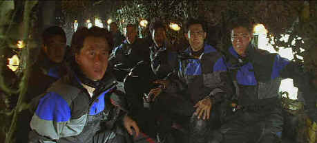

How come this first rank Jackie Chan movie
never got a domestic theatrical release. Seems like somebody made a big mistake since for
almost two thirds of this Chan flick, the action makes sense, the plotting is not plodding
and a real measure of tension is maintained. Don’t worry, there are plenty of stunts,
some great car chase work, and a healthy dose of Chan humor and charm keeps everything on
track. It all makes Who Am I? One of Jackie Chan’s more entertaining outings.
 |
Surprise guys! ©Columbia Tristar |
This time out Jackie is part of a
black ops team who thinks they are working for the CIA. When a new energy substance is
discovered in Africa, an International force is sent in to kidnap the scientists working
on the project along with the precious material. After successfully completing the
operation, the team becomes disposable. Only Chan survives a miraculous fall from the sky
through an endless series of branches. The durable Chan could probably survive anything.
He then spends an entertaining segment healing and trying to communicate with the African
tribe that him a mass of broken bones in the dense foliage.
The entertaining gimmick of Who Am I? Is that Chan
has lost his memory from the fall, though he retains his remarkable gifts for survival and
combat. From the African tribe Jackie stumbles onto an four wheel drive race, helps save
one of the drivers, and makes an a valuable ally of another. The driver, a beautiful
Japanese girl, makes the car work through Johannesburg a special treat. Add a another
pretty lady reporter and Chan is surrounded by the usual compliment of beautiful girls and
bad guys. The International action shifts to Rotterdam for its action finale.
Jackie Chan is simply amazing. The durability of this unique star
boggles the mind. Who Am I? Finds him in fine acting form, making the most of his
charm and befuddled expressions. Michelle Ferre and Mirai Yamamoto have ample energy to
keep up with Jackie. The villains are rather wooden, unfortunately, and in a few scenes
the acting reaches bottom. But Jackie and his girls are most important and under the
direction of Benny Chan, Who Am I? makes swift entertaining progress from one
locale to the next.
I really would have loved it if this movie did not fall apart
with silliness. I know wrapping up a good show is tough, but when the buyer from the US
appears looking like a refugee from a 1930s gangster film, it’s a major mistake. This
is the section that shows up the poor acting support must significantly. The General
delivers lines with all the aplomb a cashiered Private. The fight on the rooftop is
prolonged and the staging stretches Chan’s effectiveness. Perhaps his escape makes it
worthwhile, but there were better ways to get him up on the roof and quicker ways to his
escape.
Bright, high key colorful action seems requisite for Jackie Chan
action movies and Who Am I? delivers the DVD goods with maximum impact. This is a
very consistent DVD. It displays an excellent depth of image. There is some minor NTSC
artifact evidence, but the sharp images are a pleasure to behold. Contrast is pumped and
attractive. The Dolby Digital 5:1 surround is thoroughly engaging. Bass thump is provided
appropriately and dialogue gets a clean delivery. The DVD is presented in 2.35 aspect
ratio though the package mistakenly lists the aspect ratio as 1.85. |